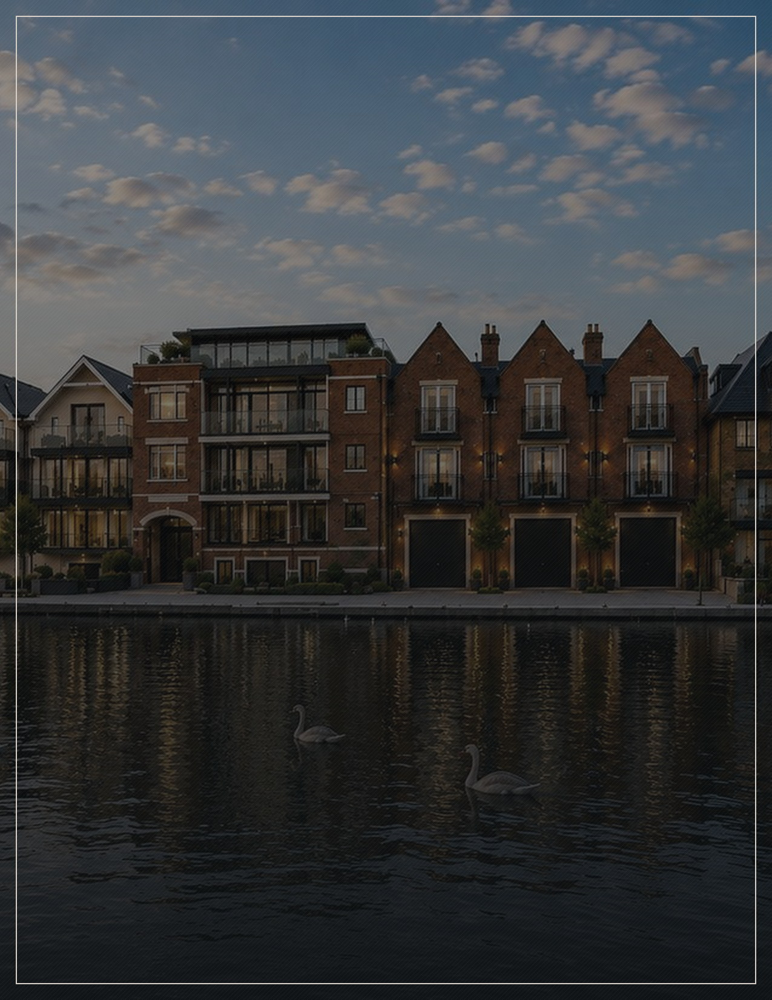
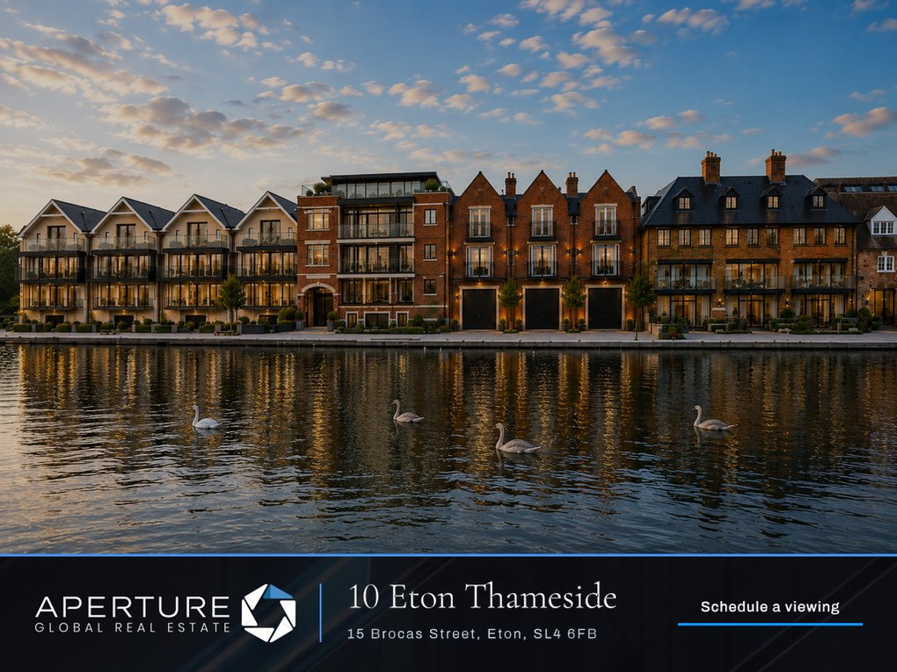
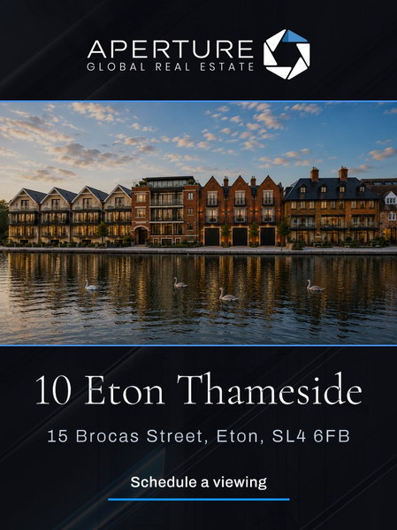
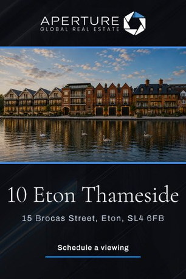
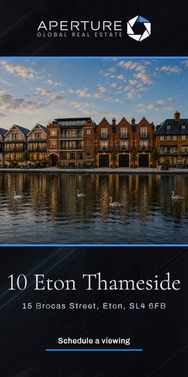
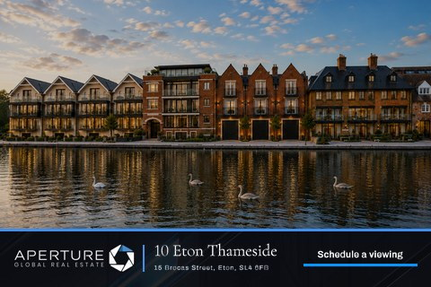
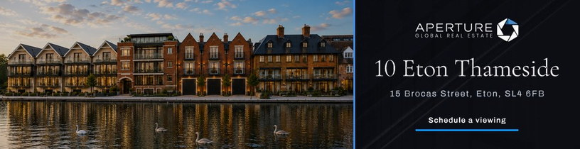
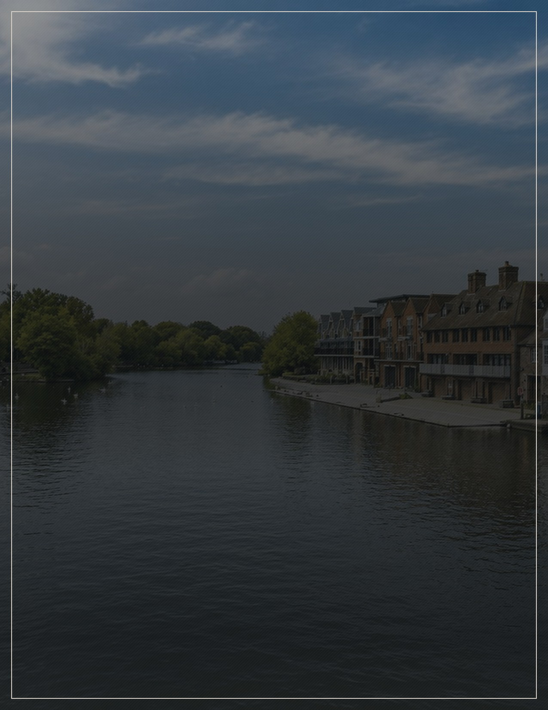

A duplex on the Thames at Eton, and Windsor Castle across the river.
Marketing Strategy
10 Eton Thameside, 15 Brocas Street, Eton, Berkshire SL4 6FB
Prepared September 2026
Apertureglobal.com
The Approach
This is a position, not a floor plan.
Your home is not advertised everywhere. It is advertised where it matters. Nobody buys 1,887 square feet at this level because of the square feet. They buy a duplex sitting directly on the Thames, with balconies over the water and Windsor Castle in the view; Eton High Street at the end of the road, Windsor over the bridge, and a train from Windsor & Eton Riverside that runs straight into Waterloo. That is a very particular buyer — someone leaving a larger house nearby, someone wanting a second home on the river, or someone who wants the Thames Valley with London still within reach. The campaign is built in two parts so each is approached on its own terms.
Two Audiences
One campaign along the Thames and into London, one for buyers abroad.
Chosen Markets
Five markets, weighted heavily toward Berkshire and London.
Tailored Creative
Six advertisements built for this home, in six shapes, for every screen.
Reported To You
A full account of where your home appeared and how buyers responded.
Marketing Strategy · The Approach
Apertureglobal.com
The Plan
Thirty days, two audiences.
Package
Opal
Duration
Thirty days
Over thirty days your home will be advertised in five markets, most of the effort inside Berkshire and London. Six advertisements have been built for it, in six shapes, each a slow pass over the river frontage, the open kitchen and reception room, the balconies and the bedrooms behind them, closing on the address and an invitation to arrange a viewing.
One Figure To Follow
The plan set out here is settled. The one figure still to come is the number of impressions — the number of times your home is put in front of someone — which is confirmed once the campaign is under way.
Impressions
To be confirmed
Marketing Strategy · The Plan
Apertureglobal.com
The Two Campaigns
Along the Thames, and from further afield.
10 Eton Thameside · £2,150,000 · 3 Bed · 3.5 Bath · 1,887 Sq Ft
The two run side by side, over the same thirty days, as a single effort. The larger one reaches buyers already living along the Thames and in London; the smaller reaches buyers abroad who look to England for a home on the river. They do not overlap, so the same buyer is not shown your home twice.
Along The ThamesFrom Overseas
Who It Reaches
Buyers leaving a larger house nearby, and Londoners wanting a home on the river within easy reach
Buyers abroad who already look to England, and to Windsor and Eton by name
Where It Runs
The Royal Borough of Windsor and Maidenhead and the wider Thames Valley, and west and central London
Dubai, Hong Kong, Singapore and New York
How Buyers Are Found
By where they are, and by whether they are actively looking at homes of this kind
By where they are, and by whether they are looking at homes in England
Languages
English
English
Share Of Delivery
The greater part
The lesser part
How Often Shown
To be confirmed
To be confirmed
Marketing Strategy · The Two Campaigns
Apertureglobal.com
Where It Runs
Most of your buyers are already on this river.
The greater part of the campaign stays close to home: the Royal Borough of Windsor and Maidenhead, the SL postcode districts around Eton and Windsor, and out along the valley through Maidenhead, Ascot, Datchet and Marlow — then into west and central London, where the Waterloo and Paddington ends of the journey are understood without explanation. That is deliberate. A three-bedroom duplex with two parking spaces is bought by someone who already knows this stretch of the Thames: leaving a larger house in the area, or keeping a London life and wanting the river at the end of it. The remaining effort goes abroad, to four cities where Windsor and Eton are recognised by name and a home on the Thames needs no argument. A wide national footprint across Britain would be the wrong shape for this home, and it is not used.
Chosen Market
At this scale Berkshire, the Thames Valley and London sit under a single dot; the table below sets them out.
MarketCampaignCoverage
Windsor, Eton and the Royal BoroughAlong the ThamesBorough
The Thames Valley — Maidenhead, Ascot, Datchet, MarlowAlong the ThamesTowns
West and central LondonAlong the ThamesCity
DubaiFrom overseasCity
Hong KongFrom overseasCity
SingaporeFrom overseasCity
New YorkFrom overseasCity
Marketing Strategy · Where It Runs
Apertureglobal.com
The Advertisements
The work, as buyers will see it.
Six advertisements, in six shapes, built for the computer, the tablet and the telephone. Each moves slowly across photographs of the home over fifteen seconds, then closes on the address and an invitation to arrange a viewing. The price is not shown, as is our practice.

Editorial Display

Immersive Full Screen

Telephone Full Screen

Vertical Display

Compact Display

Wide Editorial
See Them In Motion
Live Preview
These are still frames. Each advertisement moves — the complete set can be watched online.
Marketing Strategy · The Advertisements
Apertureglobal.com
What Happens Next
In the order it will happen.
Nothing here waits on a decision from you. The advertisements are built and the markets are chosen; what follows is the sequence from here to the report that lands on your desk at the end.
01
You See The Work
The six advertisements are finished. You watch them and approve them before a single one runs.
02
The Campaign Opens
Both campaigns begin together on the same day and run side by side for thirty days.
03
The Figure Is Confirmed
The number of impressions is set once the campaign is under way, and Toby tells you what it is.
04
It Runs, And Is Watched
Where the advertisements appear and how buyers respond is followed right through the thirty days.
05
You Receive The Report
Once the thirty days close you receive a full account: where your home was shown, in which markets, and what buyers did next.
Marketing Strategy · What Happens Next
Apertureglobal.com

Luxury without limits.
Global reach without boundaries.
Apertureglobal.com
Your Agent
Toby Madden
Estate Agent · Aperture Global
+44 7548 796758
Toby.Madden@ApertureGlobal.com